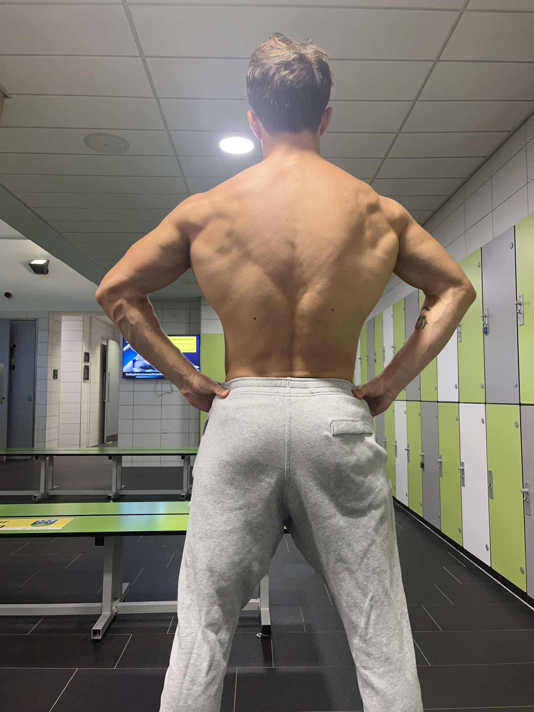

It's Importance
The muscular system is crucial for the human body as it is the system that allows people to move around. The muscular system...
Name: Mark Heidebrect
"Terry and I decided to try and stay productive over the summer and challanged each other to doing 300 push ups and 100 pull ups every other day along with at least 5k steps a day. Over the course of summer I've noticed myself becoming more disciplined and athletic."
Name: Jack Gallanger
"When my friend Terry began his fitness journey, I reminded him to consistently do pull ups even though beginners most often struggle with them. Pull ups are my favorite upper body exercise because they work a lot of different muscle groups and help you to develop a lot of functional strength"
About Me:
My name is Terry and I'm currently a 19 year old sophomore attending Syracuse University. I recently began my fitness journey and have been exercising for around a year. I genuining mean it when I say that it turned my life around and helped me in so many different ways. Once I began working out, I noticed that the benefits were mostly not physical. Although this may sound counter-intuitive, I noticed myself generally being in a better mood and becoming much more diciplined and mentally stronger to face all the problems in my life. Most importantly, I noticed myself becoming a better person phyically and in general. After every workout, I feel accomplished and the momentum to have an even more productive day. With all this being said, the reason why I made this website is to encourgae everyoone to begin their fitness journey which I believe is a big step for becoming the best version of themselves. In the beginning, I didn't know where to start or whether I would have the time to exercise but I found out that a gym is not neccessary and simple calistenics during your free time at home gets the job done. I wish I started much earlier than I did and so I hope to motivate people because the absolute best time to start something positive was years ago but the second best time is now.